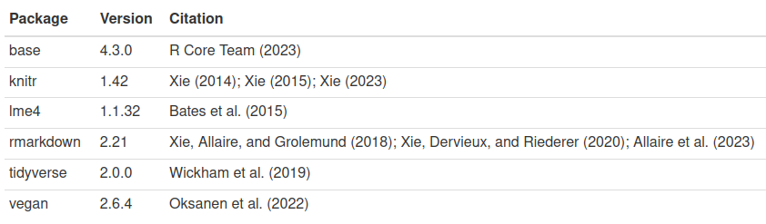

The goal of grateful is to make it very easy to cite R and the R packages used in any analyses, so that package authors receive their deserved credit. By calling a single function, grateful will scan the project for R packages used and generate a BibTeX file containing all citations for those packages.
grateful can then generate a new document with citations in the desired output format (Word, PDF, LaTeX, HTML, Markdown). These references can be formatted for a specific journal, so that we can just paste them directly into our manuscript or report.
Alternatively, we can use grateful directly within an Rmarkdown or Quarto document. In this case, a paragraph containing in-text citations of all used R packages will (optionally) be inserted into the Rmarkdown/Quarto document, and these packages will be included in the reference list when rendering.
Installation
You can install the stable release of {grateful} from CRAN:
install.packages("grateful")Or the latest development version from R-universe:
install.packages("grateful", repos = c("https://pakillo.r-universe.dev", "https://cloud.r-project.org"))Or from GitHub:
# install.packages("remotes")
remotes::install_github("Pakillo/grateful")Usage
grateful can be used in one of two ways:
to generate a ‘citation report’ listing each package and their citations
to build citation keys to incorporate into an existing R Markdown or Quarto document.
Example
Imagine a project where we are using the packages: dplyr, ggplot2, vegan and lme4. We want to collect all the citations listed for these packages, as well as a citation for base R (and for RStudio, if applicable).
Generate a document with formatted citations
Calling cite_packages() will scan the project, find these packages, and generate a document with formatted citations.
cite_packages(out.dir = ".") # save report to working directory
This document can also be a Word or LaTeX document, PDF file, markdown file, or left as the source Rmarkdown file using out.format:
cite_packages(out.format = "docx", out.dir = ".")We can specify the citation style for a particular journal using citation.style.
cite_packages(citation.style = "peerj", out.dir = ".")In all cases a BibTeX (.bib) file with all package citations will be saved to disk.
Using grateful with Rmarkdown or Quarto
If you are building a document in RMarkdown or Quarto and want to cite R packages, grateful can automatically generate a BibTeX file and ensure these packages are cited in the appropriate format (see template Rmarkdown and Quarto documents).
First, include a reference to the BibTeX file in your YAML header.
(Note: You can reference multiple BibTeX files, if needed)
Then call cite_packages(output = "paragraph") within a code chunk (block or inline) to automatically include a paragraph mentioning all the used packages, and include their references in the bibliography list.
We used R version 4.2.3 [@base] and the following R packages: lme4 v. 1.1.32 [@lme4], tidyverse v. 2.0.0 [@tidyverse], vegan v. 2.6.4 [@vegan].
Alternatively, you can get a table with package name, version, and citations, using output = 'table':

If you want the references to appear in a particular format, you can specify the citation style in the YAML header:
Alternatively, you can cite particular packages using the citation keys generated by grateful, as with any other BibTeX reference, or just include citations in the References section, using the function nocite_references(). See the package help and the RMarkdown cookbook for more details.
Frequently Asked Questions
2. Producing a BibTeX file with package references
If you just want to get all package references in a BibTeX file, you can call get_pkgs_info(). Besides printing a table with package info, it will also save a BibTeX file with references. By default, the file will be called grateful-refs.bib, but you can change that (see function help).
If you want to get the BibTeX references for a few specific packages:
get_pkgs_info(pkgs = c("remotes", "renv"), out.dir = getwd())
#> pkg version citekeys
#> 1 remotes 2.5.0 remotes
#> 2 renv 1.1.5 renv3. Using grateful with the tidyverse
If you use one or several packages from the tidyverse, you can choose to cite the ‘tidyverse’ rather than the individual packages:
cite_packages(cite.tidyverse = TRUE)4. Including package dependencies
Most R packages also depend on other packages. To include those package dependencies in your citations, rather than just the packages you called directly, use dependencies = TRUE:
cite_packages(dependencies = TRUE)5. What about external software dependencies?
Some R packages wrap core external software that should perhaps be cited too. For example, rjags is an R wrapper to the JAGS software written in C++. Ideally, R packages wrapping core external software will include them in their CITATION file. But otherwise, we can investigate external software requirements of our used packages, e.g. using remotes:
remotes::system_requirements(package = c("rjags"), os = "ubuntu-20.04")
#> [1] "apt-get install -y jags"6. What software to cite?
Citing software is pretty much like citing papers. Authors have to decide what to cite in each case, which depends on research context.
As written in the Software Citation Principles paper (Smith et al. 2016):
The software citation principles do not define what software should be cited, but rather how software should be cited. What software should be cited is the decision of the author(s) of the research work in the context of community norms and practices, and in most research communities, these are currently in flux. In general, we believe that software should be cited on the same basis as any other research product such as a paper or book; that is, authors should cite the appropriate set of software products just as they cite the appropriate set of papers, perhaps following the FORCE11 Data Citation Working Group principles, which state, “In scholarly literature, whenever and wherever a claim relies upon data, the corresponding data should be cited”
And these are the guidelines from the Software Citation Checklist:
You should cite software that has a significant impact on the research outcome presented in your work, or on the way the research has been conducted. If the research you are presenting is not repeatable without a piece of software, then you should cite the software. Note that the license or copyright of the software has no bearing on whether you should cite it.
This might include:
Software (including scripts) you have written yourself to conduct the research presented. A software framework / platform upon which the software you wrote to conduct the research relies. Software packages, plugins, modules and libraries you used to conduct your research and that perform a critical role in your results. Software you have used to simulate or model phenomena/systems. Specialist software (which is not considered commonplace in your field) used to prepare, manage, analyse or visualise data. Software being evaluated or compared as part of the research presented Software that has produced analytic results or other output, especially if used through an interface.
In general, you do not need to cite:
Software packages or libraries that are not fundamental to your work and that are a normal part of the computational and scientific environment used. These dependencies do not need to be cited outright but should be documented as part of the computational workflow for complete reproducibility. Software that was used during the course of the research but had no impact on research results, e.g. word processing software, backup software.
Apart from citing the software most relevant to the particular research/analysis performed, I think it is good idea to record the entire computational environment elsewhere, e.g. using sessionInfo() or sessioninfo::session_info().
7. Some packages include several citations
Some packages include more than one citation (e.g. knitr, mgcv). grateful will include all those citations by default, as it is impossible to decide automatically which citations should be included in each case. The user may manually remove citations from the produced reference list after calling cite_packages. If using Quarto or Rmarkdown, we can generate the citation paragraph and manually remove the unwanted references so they will not appear cited.
For example, mgcv package provides multiple references to be cited:
citation("mgcv")To choose just one of them to be cited, we could generate a citation paragraph using cite_packages
cite_packages("paragraph", out.dir = ".")
And then manually remove the unwanted citation keys, leaving just those we want to cite:
When rendering the Rmarkdown or Quarto document, only the chosen references will be cited.
8. Removing unused packages
Before running grateful you might want to run lintr::unused_import_linter, funchir::stale_package_check or annotater to check for unused packages before citing them.
9. Error: there is no package called…
If getting an error like Error in (function (pkg, lib.loc = NULL): there is no package called..., that means that some of your scripts is loading a package that is no longer available in your computer, so {grateful} cannot grab its citation. To fix this, there are several options. First, you could omit that package (or those packages, if more than one) from {grateful} citations using cite_packages(omit = c("package1", "package2"). Second, you could set a .renvignore file to ignore particular files or folders (see instructions here). Third, try checking if that package is still needed for your project and you want to cite it; otherwise remove or comment that line where the package is loaded. If you still use and want to cite that package, install it, and then run cite_packages again. Finally, you could use the argument skip.missing = TRUE to skip those missing packages from the citation list.
10. Projects with large number of packages or files
When a project includes many used packages (or files), renv may issue a warning. Use options(renv.config.dependencies.limit = 10000) to overcome the warning and scan the project for all packages used. Alternatively, use .renvignore to ignore certain files or folders (see renv help).
11. Separate bibliography for R packages
Here are example Quarto and Rmarkdown documents showing how to generate a separate bibliography for R packages (different from the main bibliography). This requires installing the multibib extension first.
12. Citing the dependencies of an R package
To cite the dependencies of an R package as stated in its DESCRIPTION file, use pkgs = c("Depends", "Imports", "Suggests", "LinkingTo") or a combination of them to obtain the desired type of dependencies.
For example, these are {grateful} package ‘Imports’ and ‘Suggests’:
cite_packages(output = "table", out.dir = ".", pkgs = c("Imports", "Suggests"))
#> Package Version Citation
#> 1 curl <NA> @curl
#> 2 desc <NA> @desc
#> 3 knitr <NA> @knitr2014; @knitr2015; @knitr2025
#> 4 remotes <NA> @remotes
#> 5 renv <NA> @renv
#> 6 rmarkdown <NA> @rmarkdown2018; @rmarkdown2020; @rmarkdown2024
#> 7 rstudioapi <NA> @rstudioapi
#> 8 testthat >= 3.0.0 @testthat
#> 9 utils <NA> @utilsTo also include the dependencies from those packages, use dependencies = TRUE:
out <- cite_packages(output = "table", out.dir = ".", pkgs = c("Imports", "Suggests"),
dependencies = TRUE)
head(out)
#> Package Version Citation
#> 1 base64enc <NA> @base64enc
#> 2 brio <NA> @brio
#> 3 bslib <NA> @bslib
#> 4 cachem <NA> @cachem
#> 5 callr <NA> @callr
#> 6 cli <NA> @cli13. Changing the language of the citation paragraph
cite_packages includes a few arguments (text.start, text.pkgs and text.RStudio) to allow the user to customise the language of the citation paragraph.
For example, to produce a citation paragraph in Spanish:
cite_packages(output = "paragraph", out.dir = ".",
text.start = "Para desarrollar este trabajo se utilizó",
text.pkgs = "y los siguientes paquetes")"Para desarrollar este trabajo se utilizó R version 4.5.1 [@base] y los siguientes paquetes: badger v. 0.2.5 [@badger], desc v. 1.4.3 [@desc], knitr v. 1.50 [@knitr2014; @knitr2015; @knitr2025], mgcv v. 1.9.3 [@mgcv2003; @mgcv2004; @mgcv2011; @mgcv2016; @mgcv2017], pkgdown v. 2.1.3 [@pkgdown], remotes v. 2.5.0 [@remotes], renv v. 1.1.5 [@renv], rmarkdown v. 2.29 [@rmarkdown2018; @rmarkdown2020; @rmarkdown2024], testthat v. 3.2.3 [@testthat], tidyverse v. 2.0.0 [@tidyverse], visreg v. 2.7.0 [@visreg]."
Or in German:
cite_packages(output = "paragraph", out.dir = ".",
text.start = "Wir verwendeten die",
text.pkgs = "und die folgenden R-Pakete")"Wir verwendeten die R version 4.5.1 [@base] und die folgenden R-Pakete: badger v. 0.2.5 [@badger], desc v. 1.4.3 [@desc], knitr v. 1.50 [@knitr2014; @knitr2015; @knitr2025], mgcv v. 1.9.3 [@mgcv2003; @mgcv2004; @mgcv2011; @mgcv2016; @mgcv2017], pkgdown v. 2.1.3 [@pkgdown], remotes v. 2.5.0 [@remotes], renv v. 1.1.5 [@renv], rmarkdown v. 2.29 [@rmarkdown2018; @rmarkdown2020; @rmarkdown2024], testthat v. 3.2.3 [@testthat], tidyverse v. 2.0.0 [@tidyverse], visreg v. 2.7.0 [@visreg]."
14. Citing ‘grateful’
citation("grateful")
To cite package 'grateful' in publications use:
Rodriguez-Sanchez F, Jackson C (2024). _grateful: Facilitate citation
of R packages_. <https://pakillo.github.io/grateful/>.
A BibTeX entry for LaTeX users is
@Manual{,
title = {grateful: Facilitate citation of {R} packages},
author = {Francisco Rodriguez-Sanchez and Connor P. Jackson},
year = {2024},
url = {https://pakillo.github.io/grateful/},
}Limitations
Citation keys are not guaranteed to be preserved when regenerated, particularly when packages are updated. This instability is not an issue when citations are used programmatically, as in the example above. But if references are put into the text manually, they may need to be updated periodically.